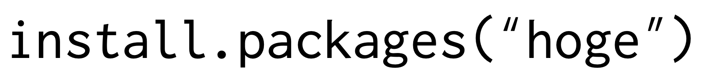
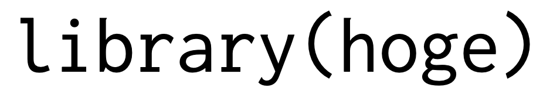
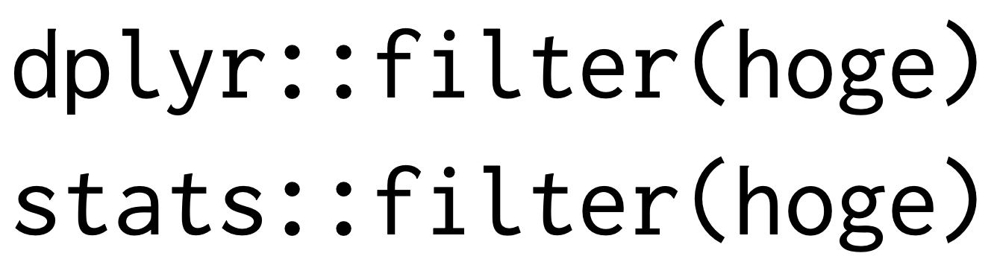

install.packages("tidyverse")5 パッケージ
5.1 よく使うパッケージ
Rはパッケージを使うことで、様々な機能を追加することができます。 ここでは、よく使うパッケージを紹介します。
5.1.1 パッケージのインストール
パッケージをインストールするには、install.packages()を使います。 packagesのsを忘れないようにしましょう。 
Rのバージョンをアップデートしない限り、一度インストールすれば、次回からはインストールする必要はありません。
例として、今後必ず使うtidyverseというパッケージをインストールしてみます。
install.packages()関数の引数にインストールしたいパッケージ名を""で囲んで指定します。 tidyverseはある一貫した哲学のもとに開発されたパッケージ群で、データの可視化や加工、モデリングなどの機能を提供します。非常に有用なので、導入しておきましょう。
5.1.2 パッケージの読み込み
パッケージをインストールしただけでは、パッケージの機能を使うことはできません。 パッケージの機能を使うには、library()関数を使ってパッケージを読み込む必要があります。 library()でパッケージを読み込むときは、""で囲む必要はありません。

── Attaching core tidyverse packages ──────────────────────── tidyverse 2.0.0 ──
✔ dplyr 1.1.3 ✔ readr 2.1.4
✔ forcats 1.0.0 ✔ stringr 1.5.0
✔ ggplot2 3.4.2 ✔ tibble 3.2.1
✔ lubridate 1.9.2 ✔ tidyr 1.3.0
✔ purrr 1.0.2
── Conflicts ────────────────────────────────────────── tidyverse_conflicts() ──
✖ dplyr::filter() masks stats::filter()
✖ dplyr::lag() masks stats::lag()
ℹ Use the conflicted package (<http://conflicted.r-lib.org/>) to force all conflicts to become errors表示されたメッセージをみると、コアパッケージとして以下のものが読み込まれていることがわかります。
✔ dplyr 1.1.4✔ forcats 1.0.0✔ ggplot2 3.4.4✔ lubridate 1.9.3✔ purrr 1.0.2
✔ readr 2.1.4✔ stringr 1.5.1✔ tibble 3.2.1✔ tidyr 1.3.0
また、Conflictsとして基本関数と関数名が重複しているものとして、filter()とlag()が表示されています。
- ✖
dplyr::filter() masks stats::filter() - ✖
dplyr::lag() masks stats::lag()
これらの関数は、dplyrパッケージの関数を使うことで、基本関数の機能を上書きしてしまうので、注意が必要です。 明示的に特定のパッケージの関数を使いたい場合は、パッケージ名::関数名()という形で指定します。

毎回、library()関数を使ってパッケージを読み込むのは面倒なので、Rの設定ファイルに読み込むパッケージを記述しておくこともできますが、ここでは省略します。
5.2 tidyverseパッケージ群
これで、次の非常に便利なパッケージを使うことができるようになります。
-
dplyrパッケージ-
mutate()関数：新しい変数を作成・追加する -
filter()関数：条件に合うデータを抽出する -
select()関数：特定の変数を抽出する -
arrange()関数：データを並び替える -
group_by()関数：グループ化する -
summarise()関数：統計量を計算する
-
-
tidyrパッケージ-
pivot_wider()関数：ロングをワイドに変換 -
pivot_longer()関数：ワイドをロングに変換
-
-
ggplot2パッケージ-
ggplot()関数：作図する
-
-
lubridateパッケージ -
readrパッケージ-
read_csv()関数：csvファイルを読み込む -
write_csv()関数：csvファイルを書き出す
-
-
purrrパッケージ -
stringrパッケージ-
str_detect()関数：文字列にパターンが含まれるかどうかを判定する -
str_replace()関数：文字列の一部を置換する -
str_extract()関数：文字列からパターンにマッチする部分を抽出する -
str_sub()関数：文字列の一部を抽出する -
str_split()関数：文字列を分割する
-
これらの関数は、tidyverseパッケージを読み込むことで、自動的に使えるようになります。
5.3 おすすめパッケージ
他にも、次のようなパッケージを使います。
5.3.1 テキストマイニング・自然言語処理
-
RMecabパッケージ-
mecab()関数：形態素解析を行う -
mecabDic()関数：辞書を作成する
-
-
tidytextパッケージ-
unnest_tokens()関数：テキストを単語に分割する -
count()関数：単語の出現頻度を計算する -
anti_join()関数：データフレームの結合を行う
-
5.3.2 多変量解析
-
psychパッケージ-
describe()関数：データの要約統計量を計算する -
alpha()関数：クロンバックのα係数を計算する -
fa()関数：因子分析を行う
-
-
lavaanパッケージ-
cfa()関数：検証的因子分析を行う -
sem()関数：構造方程式モデルを推定する
-
-
semPlotパッケージ-
semPaths()関数：構造方程式モデルを可視化する
-
-
gmodelsパッケージ-
CrossTable()関数：クロス集計表を作成する
-
5.3.3 機械学習
-
RWekaパッケージ-
J48()関数：決定木を作成する -
RandomForest()関数：ランダムフォレストを作成する -
Logistic()関数：ロジスティック回帰を作成する
-
-
caretパッケージ-
train()関数：機械学習モデルを学習する -
predict()関数：機械学習モデルを使って予測する
-
5.3.4 作表・作図
-
modelsummaryパッケージ-
modelsummary()関数：モデルの結果を表形式で表示する
-
-
knitrパッケージ-
kable()関数：データフレームを表形式で表示する
-
-
kableExtraパッケージ-
kable_styling()関数：kable()関数で作成した表を装飾する
-
-
patchworkパッケージ-
+演算子で複数のグラフを結合できる
-
-
ggrepelパッケージ-
geom_text_repel()関数：重ならないようにテキストを配置する
-
-
plotlyパッケージ-
ggplotly()関数：ggplot2で作成したグラフをインタラクティブにする
-
5.4 まとめてインストール
複数のパッケージをインストールしたり、読み込んだりするのは面倒ですが、pacmanパッケージを使えば、一度にまとめて行うことができます。
# install.packages("pacman")
pacman::p_load(tidyverse, psych, ggthemes, knitr, kableExtra)読みだそうとしているパッケージがインストールされていない場合は、自動的にインストールしてくれます。